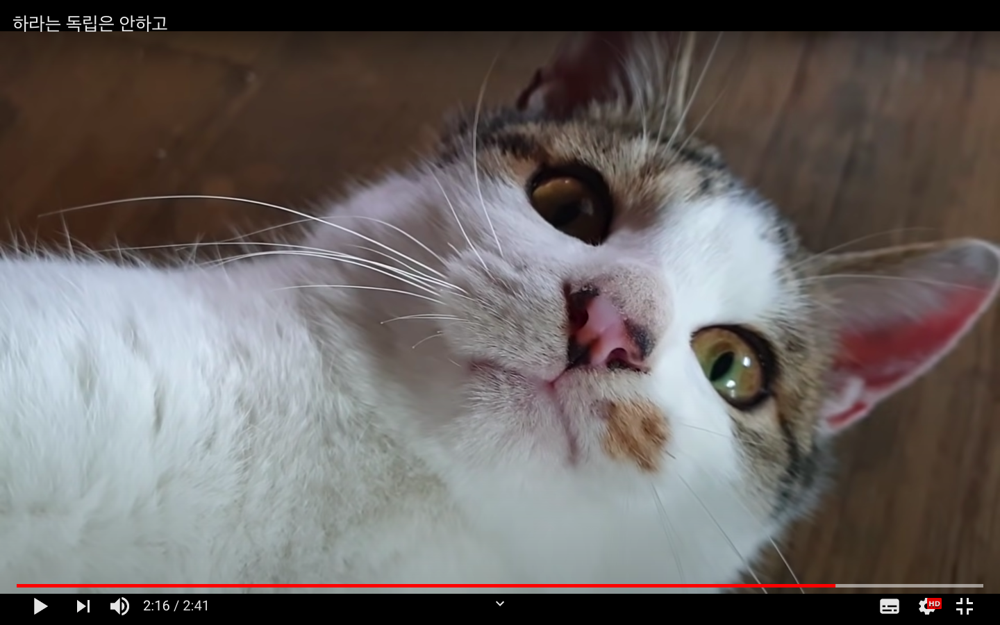
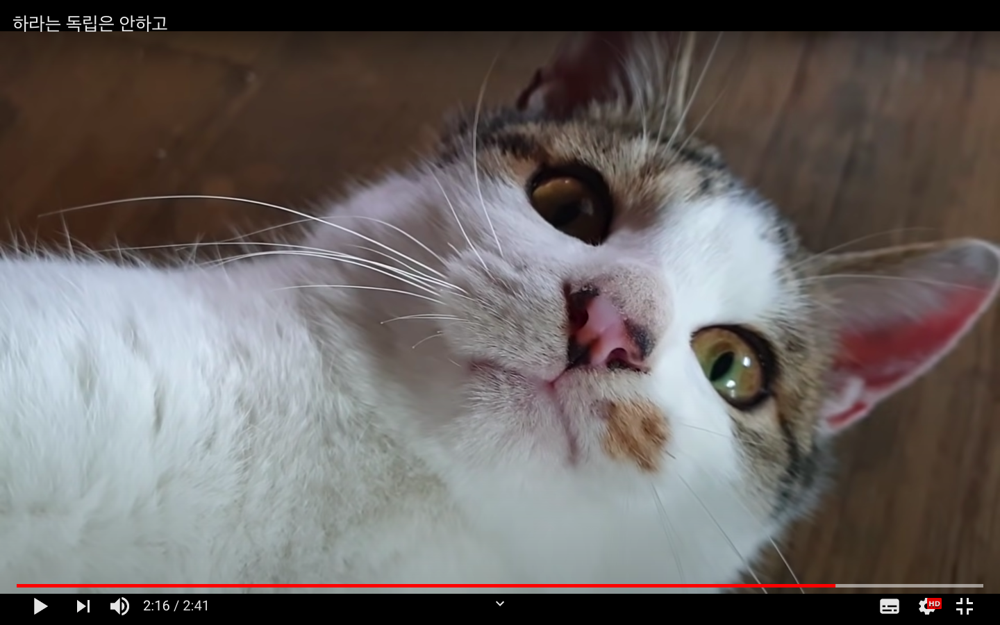

What I Iike!
내가 좋아하는 것은 고양이이다.
 

이 애옹이들은 유튜버 '하하 하'님의 채널에 출연하는 고양이들이다.
이 채널에는 귀요미 고양이들이 많이 등장해 힐링하기 좋다.
여기를
누르면 '하하 하'님의 채널로 갈 수 있다! 한번 쯤은 들어가보기를 추천한다!!
사진에는 없지만 내가 가장 좋아하는 고양이는 치즈냥이다.
그리고 내가 또 좋아하는 것은 비이다!
가수 비가 아니라 날씨!
나가야 하는 날 비가 오는 건 정말 싫어하지만 집에 있는 날 비가 오면
아주 기분이 좋다. 빗소리와 시원한 바람이 너무 좋다.